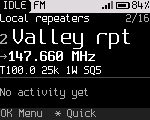
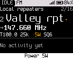
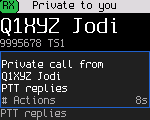
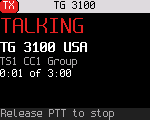
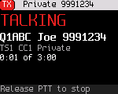

Questa pagina non è ancora tradotta; è mostrata in inglese.
The Home Screen
Home answers four questions at a glance: where you are, what PTT will do, what is happening, and whether the radio is OK.


Regions, top to bottom
| Region | Shows |
|---|---|
| Status line | Left: the state (IDLE, RX, TX, or NO TX when a transmission is refused; RX whenever the squelch is open, monitor included), the mode (DMR or FM), SCAN or MON when scan or monitor is on, and IP while USB is a network adapter, with an up and a down arrow after it once the computer has connected to it. Right: "L" when the keys are locked, "M" and a number for unread messages, the signal bars, the battery icon and the battery percentage. On a color screen the line is filled with the highlight color, its text black (Settings > Display > Filled status bar) |
| Place | The zone name and the channel's position in the zone ("3/16"). In the VFO: "VFO" |
| Channel | The channel number and name, as large as they fit. In the VFO: the frequency |
| Talk target | An arrow and where PTT goes. DMR: a talkgroup or person, as "TG 91 World"; a name too long to fit is cut ("TG 201 Main O…") before it is dropped. FM: the transmit frequency. During the reply window: a return arrow in a filled box, and a countdown. To read the talkgroup's name first ("World TG 91"), turn on Settings > Display > Talkgroup name first, or give a side key TG name / number (Settings > Keys) |
| Chips | DMR: timeslot, color code, "Rpt" on a repeater channel, power (the signal bars show when the repeater is heard). FM: tone, bandwidth, power, squelch level |
| Activity | Idle: the last station heard and how long ago, or "No calls heard yet". A setting the radio needs before it can transmit comes first, in the warning color ("Set: Board revision", or "Restart to apply"), with the hint row saying where to set it. Receiving or transmitting: see below |
| Hint row | What the nearest keys do now |
A field changed for now (a temporary change) is drawn in a highlight color on Home, and the hint row says "Back undo Hold OK save".

The battery percentage turns to the warning color at the low battery warning level (15 % by default) and below.
Hint row messages
The hint row changes with the situation. What the Back key does is always at the right end of the row, above the key. The most common hints:
| Hint | Meaning |
|---|---|
| OK Menu * Quick # Joe | The normal hint. The name after # is the last caller. # opens actions for them |
| Back undo Hold OK save | The channel has temporary changes |
| # caller Back end reply | The reply window is running. PTT answers the last call |
| Back: channel's talkgroup | A talk target chosen for now is in use ("Back default target" where the row is narrow) |
| Digital monitor Back off | Digital monitor is on |
| # skip Back stop scan | Scan is running |
| No codec: voice off | DMR channel without the codec merged |
| 0-9 freq * Quick Up/Dn | In the VFO |
| Keys locked: hold * to unlock | The keys are locked ("Locked: hold * to unlock" where the row is narrow) |
Receiving
During a DMR call, Home shows the caller:
- the name, from your contacts or else from the DMR ID database in the codeplug;
- the DMR ID and the timeslot;
- the talker alias as it arrives, unless Settings > Talk & listen > Show talker alias is off;
- the talkgroup, or "Private to you";
- the signal strength (in DMR, the peak of the last 120 ms, so the empty timeslot doesn't show as a drop).


A call that the radio hears but doesn't play shows why. The reasons are "Other TG: not played" (a talkgroup you don't listen to), "Encrypted: not played" and "No codec: voice off". Hold Monitor to hear a call on another talkgroup.
On FM, the activity region shows "Receiving" while the squelch is open, or "Squelch open" (monitor).
Transmitting
While you hold PTT, the screen shows TALKING, the target, the timeslot and color code (DMR), the time on air and the transmit timeout. DMR shows the time as "0:07 of 3:00", FM as "2:53 left of 3:00".
On DMR the top line says what kind of call it is: "TG 3100" for a group call, "Private 9991234" for a private call. A private call shows the contact's name, and its ID when there is room. A name too long for the line keeps the name and drops the ID.


On DMR the screen may first show WAITING (the radio waits for a free slot) or WAKING RPT (it wakes up the repeater). While it wakes the repeater, the red LED blinks once for each wake-up signal it sends, and lights steady once you are on the air.
The radio also transmits without PTT on DMR: registration (ARS), text messages, positions, call alerts and their answers, and packet data from a computer on USB or serial. While it does, the status line shows TX, the red LED lights and Home says SENDING. Data the radio receives shows RX on the status line.
When the radio refuses to transmit, the status line shows NO TX and the LEDs flash red, green, red, green, red, green once with the deny tone. On a busy channel there is no tone, and the call you are hearing keeps playing. The screen says why, and the hint row says what to do:
| Message | Cause | What to do |
|---|---|---|
| This channel is RX only | The channel is set receive only | Pick another channel |
| Outside ... | The frequency is outside the radio's transmit bands | Pick another channel, or tune into a band in the VFO |
| TX time-out reached | You talked longer than the transmit timeout | Release PTT and press it again |
| No TX frequency set | The channel has no transmit frequency | Fix the channel in the codeplug |
| No codec: voice off | DMR voice without the codec | "Add codec with rfoundry" (Installing) |
| Channel busy | Someone else is talking on the slot | Wait for the call to end |
| No repeater answered | The repeater didn't wake up | "Check CC and range" |
| Hotspot mode: PTT off | The radio is a hotspot | Press OK to leave hotspot mode |
| No DMR ID in codeplug | The codeplug has no DMR ID | Set your ID in the codeplug |
| DMR modem not running | The DMR chip didn't start | Restart the radio. See Troubleshooting |
| Set: Board revision (or another hardware option) | The radio can't detect it and won't transmit until it knows | Settings > Advanced > Hardware (Radios says what to pick) |
| Restart to apply | A hardware option was changed and applies from the next start | Switch the radio off and on |
| Radio refused to send | The radio's transmitter refused this transmission | "Release PTT, try again". If it repeats, restart the radio |
| Modem refused to send | The DMR chip refused the call, or took it and sent nothing for 1.5 s | "Release PTT, try again". If it repeats, restart the radio |
The low and critical battery levels also limit transmitting. See Battery and power.
Large text
Settings > Display > Large text shows only the status line, the channel name and the talk target, each as large as it fits. The radio keeps this setting across power off. It keeps Settings > Display > Hint row too.